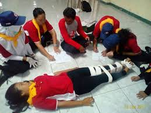

Event And Activity
berbagai macam acara dan kegiatan

PMR

PRAMUKA

Ekskul wajib yang tersedia
Palang Merah Remaja adalah wadah pembinaan dan pengembangan anggota remaja PMI, yang selanjutnya disebut PMR.Terdapat di PMI kota atau kabupaten di seluruh Indonesia, dengan anggota lebih dari 5 juta
Gerakan Pramuka Indonesia adalah nama organisasi pendidikan nonformal yang menyelenggarakan pendidikan kepanduan di Indonesia.Kata "Pramuka" merupakan singkatan dari Praja Muda Karana, yang memiliki arti Jiwa Muda yang Suka Berkarya.
Paskibraka adalah singkatan dari Pasukan Pengibar Bendera Pusaka dengan tugas utamanya untuk mengibarkan dan menurunkan Bendera Pusaka dalam upacara peringatan Hari Kemerdekaan Republik Indonesia dan Proklamasi Kemerdekaan Republik Indonesia di tiga tempat, yakni tingkat kabupaten/kota, provinsi, dan nasional.
berbagai macam acara dan kegiatan